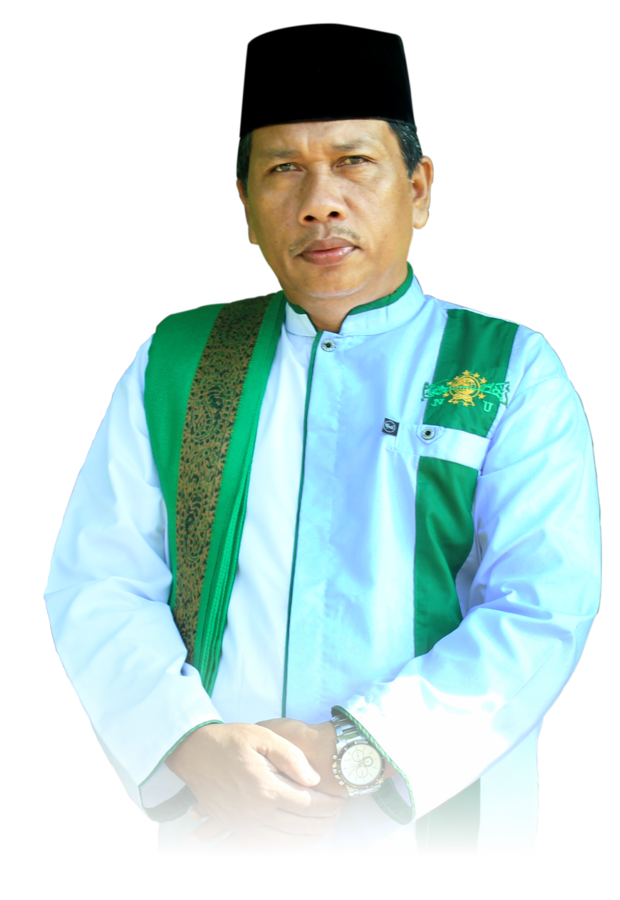

Akta notaris MUJIRIYATNO AM, SH. No. 19/1995 Jl. DR. AK. Gani No. 50 Kampung Jaya Tinggi Kecamatan Kasui Kabupaten Way Kanan Lampung – Indonesia Pos. 34765

KH.MARSUDI
Pembina Pon-Pes RM
SEMBOYAN PONDOK PESANTREN RAUDLATUL MUTA'ALLIMIN
"TEGHENDAM LEMAK DINGIN TEPANGGANG LEMAK ANGAT"
"HIDUP MULIA ATAU MATI SEBAGAI SYUHADA"
Sekertariat
Jl. DR. AK. Gani No. 50 Kampung Jaya Tinggi Kecamatan Kasui Kabupaten Way Kanan Lampung – Indonesia Pos. 34765
--SEJARAH PONDOK PESANTREN RAUDLATUL MUTA'ALLIMIN--
____Ust. Marsudi Bin H. ‘Abdul Khaliq merupakan seorang putra kelahiran penantian kecamatan Pulau Panggung Kabupaten Tanggamus Lampung,
alumni dari Pondok – pesantren Raudlatul Muta’allimin Jakarta, yang lahir pada tanggal 19 Juli 1967.
Beliau Hijrah ke kecamatan kasui kabupaten Way kanan tahun 1992, tanpa membawa banyak bekal baik dari segi keilmuan maupun materi. hanya saja Beliau mempunyai semangat yang tertanam dengan
semboyan dengan bahasa Semende, karena Beliau suku semende :
"TEGHENDAM LEMAK DINGIN TEPANGGANG LEMAK ANGAT"
"Artinya : Tak Kenal menyerah atau tak kenal lelah berjuang untuk Islam."
____Diawali Beliau mengadakan Pengajian keliling setiap sudut Kampung di Kecamatan Kasui, Banjit dan Rebang Tangkas. Mengenalkan diri dan menyampaikan
Visi dan Misi untuk mendirikan Lembaga Pendidikan Islam yang diberi nama Raudlatul Muta’allimin.
Pada tahun 1993 dimulai cikal bakal Pondok Pesantren Raudlatul Muta’allimin dengan didirikanya TPA Raudlatul Muta’allimin, mulai dari menebas
hutan seluas setengah Hektar yang Beliau dapat dari masyarakat, hingga berkembang pesat dan pada tanggal 18 Juni 1995 resmi berdiri Pondok Pesantren Raudlatul Muta’allimin.
Dimulai menampung Anak – anak yatim dan anak kurang mampu yang menjadi anak asuh dan teman merintis sampai sekarang tetap memelihara anak – anak yatim
dan anak kurag mampu sebagai anak asuh. Hingga saat ini Pondok Pesantren Raudlatul Muta’allimin telah memiliki lokasi 15 Hektar dengan jenjang pendidikan formal yang dimulai dari RA, MI, MTs, MA, dan SMK.
Dengan jumlah santri sebanyak 800 orang dan dilengkapi Tenaga Pendidik sebanyak 40 orang Alumni dari
berbagai Perguruan Tinggi dalam dan luar negeri. Program pendidikan yang dijalankan di pondok pesantren baik formal maupun non formal yaitu :
___Pelaksanaan KBM mengacu pada kurikulum kementrian agama dan kementrian pendidikan Indonesia.
Selain belajar secara formal santri juga diharuskan mengikuti kegiatan non formal seperti, menghapal Qur’an (tahfiz), latihan ceramah, seni baca Alqur’an, pembinaan Bahasa Arab, Pembinaan Bahasa Inggris,
Pengkajian Kitab Kuning, Pendidikan Ber organisasi maupun keterampilan seperti bela diri, Kuntau, Perikanan ,Perkebunan dan yang lain nya.
--SISTEM PENDIDIKAN PONDOK PESANTREN RAUDLATUL MUTA'ALLIMIN--
____Untuk mencapai tujuan pendidikan yang telah digariskan Pondok Pesantren Raudlatul Muta’allimin secara formal maupun non formal, para santri
dibina melalui jalur madrasah madrasah yang dikelolah oleh pengurus, wali kelas, serta guru-guru yang berpengalaman dibidangnya.
Selain itu para santri putra dan putri ditempatkan pada asrama permanen dengan tempat terpisah serta dibimbing oleh pengurus asrama dan dewan asatidz yang mukim di pondok Pesantren.